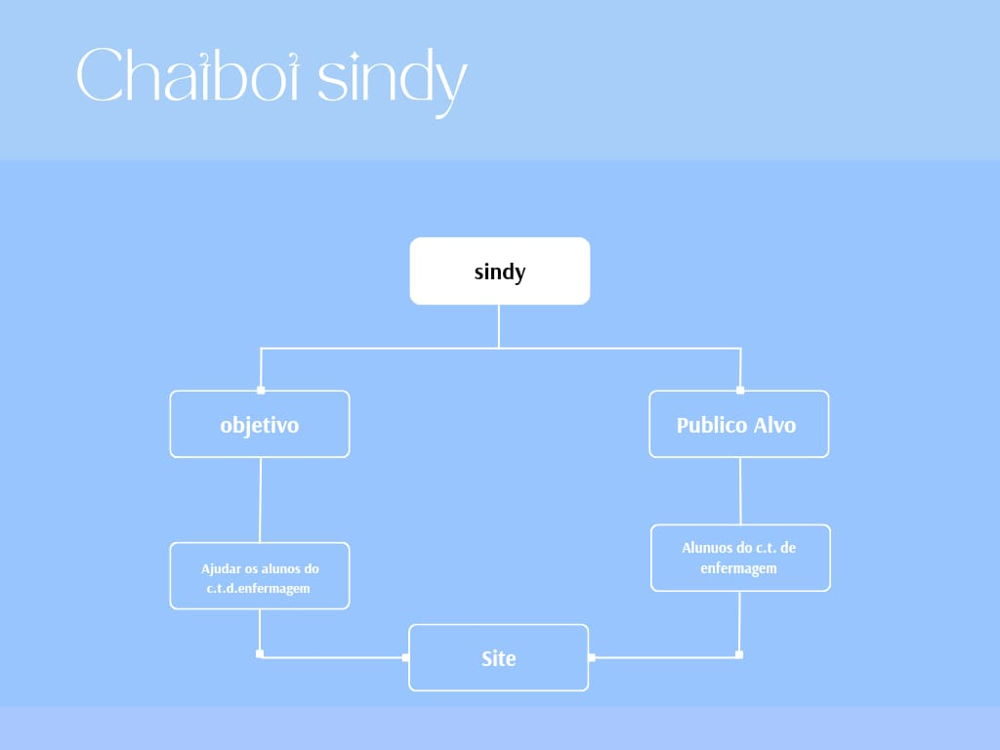

O chat dedicado a ajudar enfermeiras com dúvidas e apoio em tempo real!
A Sindy é um assistente virtual desenvolvido para apoiar enfermeiras no seu trabalho diário, proporcionando ferramentas práticas para otimizar processos e melhorar o atendimento aos pacientes.
O chatbot Sindy foi desenvolvido com o propósito de ser uma ferramenta acessível e humanizada, capaz de oferecer suporte informativo e emocional a crianças e adolescentes que enfrentam condições desafiadoras, como síndromes convulsivas graves, dificuldades de locomoção, sequelas neurológicas e sofrimento mental. Além disso, Sindy busca promover a inclusão, a conscientização, o bem-estar e também melhorar a qualidade de vida, tanto dos pacientes quanto de seus cuidadores, proporcionando informações claras e práticas que auxiliem no manejo dessas condições, criando um ambiente de acolhimento para pacientes e suas famílias.
Com um design voltado para acessibilidade, o Sindy atende tanto profissionais de saúde, que necessitam de atualizações e orientações técnicas, quanto o público leigo, incluindo familiares, educadores e cuidadores, que precisam de explicações simples e suporte emocional. O chatbot atua como uma ponte de conexão, aproximando diferentes públicos e criando um espaço confiável para o compartilhamento de informações, soluções práticas e suporte contínuo, auxiliando na compreensão e no enfrentamento dos desafios que envolvem essas condições, com foco na empatia e na humanização dos cuidados. Assim, Sindy não apenas informa, mas também inspira empatia e solidariedade, sendo um recurso valioso para todos que lidam direta ou indiretamente com esses temas.
A Sindy foi criada com as mais modernas tecnologias de inteligência artificial, proporcionando uma experiência de uso simples, rápida e inteligente.
Tem algo a dizer? Sua opinião é essencial para melhorarmos ainda mais a Sindy. Envie seu feedback para nós.